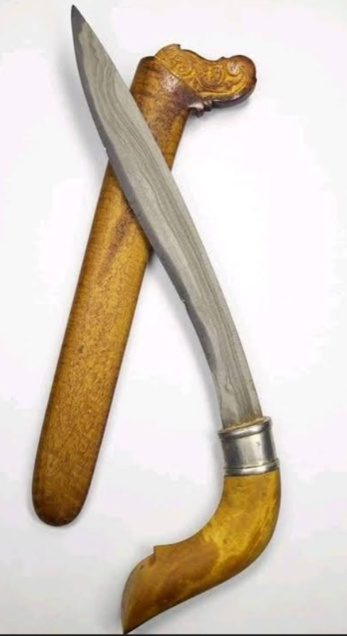
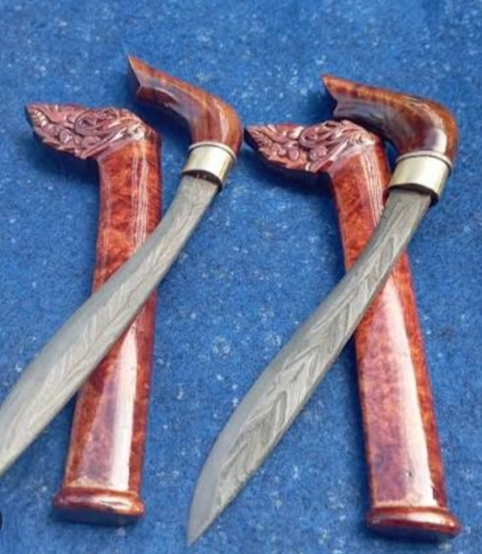
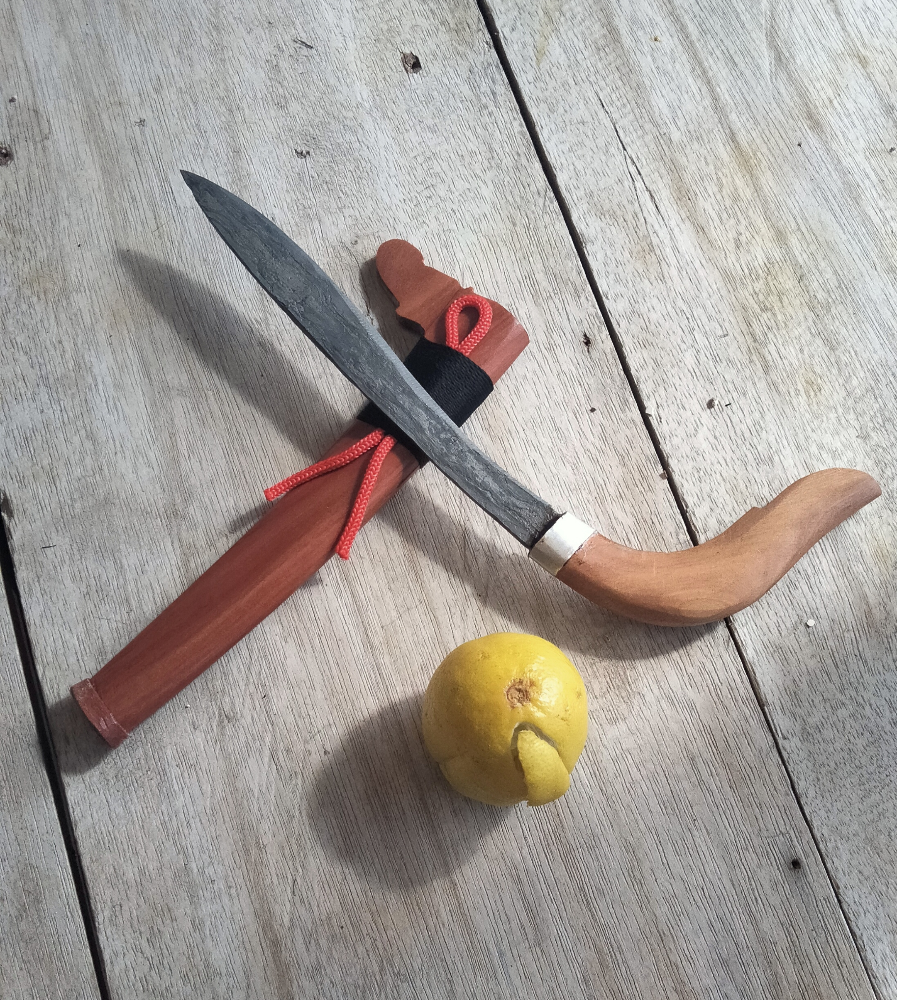
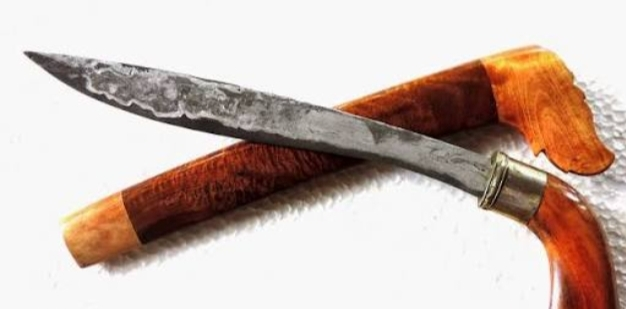

Kawali merupakan senjata tradisional masyarakat Bugis yang telah digunakan sejak masa kerajaan seperti Kerajaan Bone. Dalam kehidupan masa lalu, kawali menjadi bagian dari identitas diri, kehormatan, dan simbol keberanian. Laki-laki dewasa umumnya membawa kawali sebagai tanda kesiapan menjaga diri dan keluarga. Kawali juga hadir dalam berbagai peristiwa penting seperti adat, perjanjian, hingga konflik. Tradisi ini diwariskan turun-temurun dan masih dikenang hingga sekarang.
Kawali gecong adalah jenis kawali berukuran kecil, ringan, dan sederhana. Digunakan untuk aktivitas sehari-hari seperti berkebun, bekerja, dan perlindungan diri. Memiliki bilah pendek, tajam, dengan bentuk lurus atau sedikit melengkung. Sarung biasanya dari kayu dengan tampilan sederhana namun tetap fungsional. Gagang dibuat agar nyaman digenggam, mencerminkan kedekatan dengan pemiliknya. Lebih umum dimiliki oleh masyarakat biasa dibandingkan kalangan bangsawan.
Kawali berkaitan erat dengan konsep Siri’. Siri’ menjadi dasar dalam menjaga harga diri, rasa malu, dan kehormatan. Memiliki kawali berarti memiliki tanggung jawab menjaga sikap dan perilaku. Melambangkan keberanian yang berlandaskan kebenaran, bukan sekadar emosi. Mengajarkan keseimbangan antara kekuatan dan kebijaksanaan.
Bilah melambangkan ketegasan dan keberanian dalam menghadapi kehidupan. Gagang melambangkan kendali diri dan arah tindakan. Sarung melambangkan perlindungan serta batasan norma. Kesatuan bagian-bagian tersebut mencerminkan manusia yang ideal: kuat, terkendali, dan bermoral.
Dibuat dengan bentuk sederhana tanpa banyak hiasan. Mencerminkan kehidupan yang jujur, sederhana, dan tidak berlebihan. Menunjukkan bahwa nilai seseorang tidak ditentukan oleh kemewahan. Mengajarkan bahwa kesederhanaan tetap memiliki kehormatan tinggi.
Dalam kepercayaan masyarakat tertentu, kawali diyakini memiliki “isi” atau energi yang tidak terlihat. Ada anggapan bahwa kawali dapat menjadi pelindung bagi pemiliknya. Diyakini dapat membawa kewibawaan, keberanian, atau ketenangan batin. Hubungan antara pemilik dan kawali dianggap bisa terbentuk melalui perawatan dan penghormatan.

Kawali yang dirawat dengan baik dipercaya memiliki “rasa” atau ikatan khusus.

Dalam cerita rakyat yang berkembang, terdapat kepercayaan bahwa beberapa kawali tidak sepenuhnya dibuat oleh manusia. Dikisahkan bahwa ada kawali yang konon dibuat oleh makhluk halus dalam waktu semalam, dari malam hingga pagi. Cerita ini biasanya muncul untuk menjelaskan kawali dengan kualitas sangat halus atau berbeda dari buatan biasa. Kepercayaan tersebut menjadi bagian dari warisan lisan yang memperkaya nilai budaya kawali.

Hingga kini, kisah seperti ini lebih dipandang sebagai legenda atau simbol kepercayaan masyarakat masa lalu.
Kawali disimpan dengan baik dan tidak diletakkan sembarangan. Dibersihkan secara rutin sebagai bentuk penghormatan terhadap benda budaya. Tidak boleh dilangkahi atau diperlakukan tidak sopan. Perlakuan ini mencerminkan rasa hormat terhadap nilai sejarah dan budaya.
Beberapa orang percaya bahwa kawali ini di buat oleh makhluk khalus pada jaman dahulu dari malam hingga pagi. Saat ini, nilai mistis lebih dipahami sebagai bagian dari kepercayaan tradisional. Tidak semua orang mempercayainya secara harfiah, namun tetap menghargai makna simboliknya. Kisah mistis dianggap sebagai bagian dari identitas budaya dan sejarah lisan. Penekanan utama tetap pada nilai filosofi dan budaya yang terkandung.
Kawali gecong kini lebih sering menjadi koleksi atau benda budaya. Digunakan dalam acara adat sebagai simbol tradisi. Menjadi kerajinan yang memiliki nilai seni dan sejarah. Dimanfaatkan sebagai media edukasi bagi generasi muda.
Kawali gecong adalah warisan budaya yang sederhana namun sarat makna. Mengandung nilai kehormatan, keberanian, kesederhanaan, dan tanggung jawab. Kisah mistis yang menyertainya menambah kekayaan budaya dan daya tariknya. Melestarikan kawali berarti menjaga identitas dan menghormati warisan leluhur.